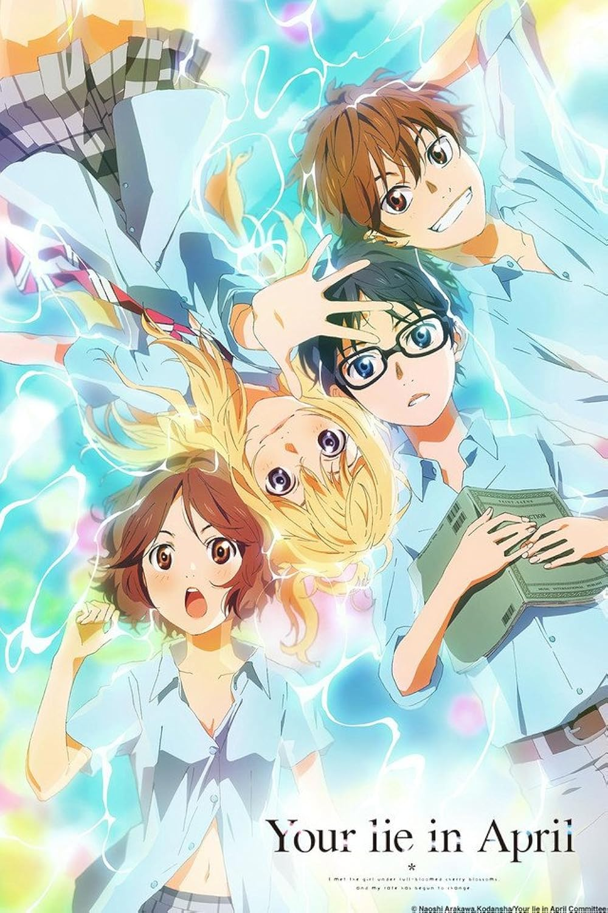

Toradora! is a romantic comedy anime that explores love, friendship, and personal growth through two unlikely companions.
"Your Lie in April" (Shigatsu wa Kimi no Uso) is a Japanese anime series that blends music, romance, and drama with deep emotional storytelling.
Anohana is a heartfelt drama anime about a group of childhood friends who drifted apart after the tragic death of their friend Menma.